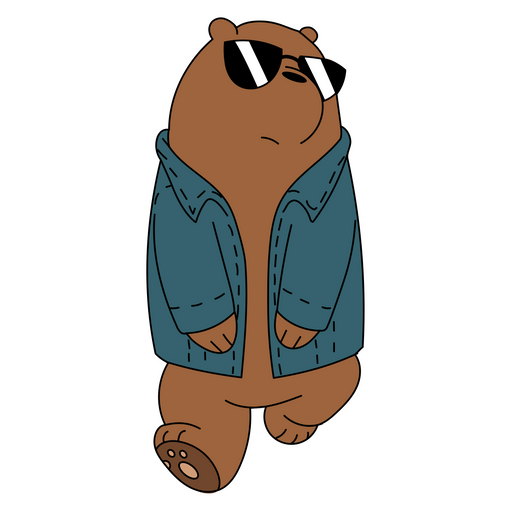

Historia
la historia de origen de Pardo en We Bare Bears muestra que su verdadera fortaleza no proviene de un pasado
extraordinario o dramático, sino de su enorme corazón y su deseo constante de pertenecer; desde que era un
cachorro solitario, Pardo soñaba con tener amigos y formar parte del mundo humano, y aunque enfrentó la soledad,
nunca perdió su optimismo ni su energía contagiosa, lo que finalmente lo llevó a encontrar a Panda y Polar y
convertir esa casualidad en una familia inseparable, demostrando que el origen más poderoso no siempre nace del
sufrimiento, sino de la decisión de amar, liderar y mantenerse fiel a la esperanza de que siempre habrá un lugar
donde uno pueda ser aceptado.

Información
Cualidades de Pardo
- Liderazgo natural: Asume el papel de hermano mayor y guía del grupo.
- Extrovertido: Disfruta socializar y conocer nuevas personas.
- Optimista: Mantiene una actitud positiva incluso cuando los planes fallan.
- Carismático: Tiene una personalidad energética y contagiosa.
- Soñador: Aspira a ser popular y aceptado por la sociedad humana.
- Impulsivo: A veces actúa sin pensar demasiado en las consecuencias.
- Protector: Cuida y defiende a sus hermanos cuando es necesario.
- Persistente: No se rinde fácilmente ante el rechazo o el fracaso.
- Expresivo: Muestra abiertamente sus emociones y entusiasmo.
Momentos importantes
- Cuando conoce a Panda: Este momento marca el inicio de su familia, ya que decide no estar más solo y comienza la hermandad que definirá toda la historia.
- El encuentro con Polar: Al integrar a Polar al grupo, Pardo consolida el trío definitivo y asume completamente su rol de hermano mayor y líder.
- La decisión de vivir juntos en la cueva: Representa el inicio de su nueva vida en la ciudad, donde persigue su sueño de encajar en el mundo humano sin dejar de lado a sus hermanos.
Ficha técnica
| Categoría | Edad | Peso | Estatura | Primera aparición | Debilidades / Curiosidades | Nombre completo real |
|---|---|---|---|---|---|---|
| Personaje animado | 27 años | 180-360 kg | 3 metros | Episodio "Our Stuff" (2015) | Ingenuidad, impulsividad, necesidad de aceptación social | Pardo |
Registro de fans
Responde las siguientes preguntas para unirte al club oficial de fans de Pardo.